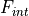
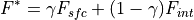
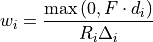
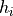
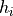
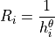
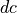
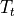
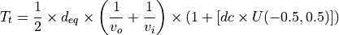

Background¶
Motivation¶
dorado was developed to provide an open-source and general method for routing passive tracer particles in a landscape scale flow field. Methods to simulate Lagrangian particle transport exist in adjacent fields and have been developed to solve problems at large scales 1 and at small scales 2. The popular Delft3D suite of modules contains a method for Lagrangian particle tracking called Delft3D-PART 3, however as part of the larger, complex Delft3D ecosystem, this code is harder to interrogate and understand directly.
By developing dorado as a standalone python package, we hope to simplify the simulation of Lagrangian particle transport so that it may be applied to the results from any hydrodynamic simulation.
Theory¶
Particle transport is simulated through the use of a weighted random walk framework 4. In particular, we apply methods similar to those used in the numerical model DeltaRCM 5 6, to weight the random walk by the local water slopes and the water discharge components.
dorado assumes a rectangular grid and routes particles in a D-8 fashion assuming that the potential future location of a given particle is one of the surrounding 8 cells.
The weights for the random walk are sensitive to 2 parameters,  and
and  .
.
The routing direction (F*) is the estimate of the local downstream of the flow 5. This direction F* is comprised of , and , calculated based on the water surface gradient and the discharge respectively. The proportional combination of these directional components is dictated by the parameter :

In this way, the parameter controls the proportional dependence of water surface slope and water discharge on the downstream direction. A of 0 means that the water slope is ignored when determining the downstream flow direction, and a of 1 means that the discharge values (the flow field) is ignored.
The second weighting parameter, modifies the routing weight for the random walk based on the local water depth value. The routing weights for each neighboring cell are calculated per [5], using the following equation:

The resistance value ( ) is computed using the local water depth () and the parameter :
) is computed using the local water depth () and the parameter :

When is 0, then the local depth values are not impacting the weighting factor associated with each cell. As gets larger, the local routing weights have an increasingly large dependence on the water depth of the neighboring cells.
To measure the travel times associated with the particles as they move through the flow field, both the flow velocity and the direction of the flow are taken into account. As the particles are routed on a grid, there is a loss of accuracy due to the assumption that particles are located in the center of grid cells. To account for this ‘lost time’, a diffusive coefficient () is applied to introduce some diffusivity to the travel time values.
The travel time calculation is based on the effective distance the particle travels in the orientation of the mean flow at the particle’s location. This effective or projected distance () is computed using the definition of a vector projection based on the actual distance being traveled ( ) and the orientation of travel relative to the mean flow vector (
) and the orientation of travel relative to the mean flow vector ( ):
):

The travel time () is then calculated based on this effective distance () and the average of the inverted velocity values at the origin cell location () and the new cell location ( ) for the particle. To re-introduce diffusivity lost due to the gridded scheme used in dorado, the travel time is also modulated by a user-specified diffusivity coefficient () which is multiplied by a sample from a uniform distribution centered at 0:
) for the particle. To re-introduce diffusivity lost due to the gridded scheme used in dorado, the travel time is also modulated by a user-specified diffusivity coefficient () which is multiplied by a sample from a uniform distribution centered at 0:

When is 0, then the travel time calculation is based solely on the velocity field and deviation in particle path trajectory from the mean flow path. As the diffusivity coefficient is increased, the diffusivity present in travel time distributions will increase as well.
References¶
- 1
Dagestad, K.-F., Röhrs, J., Breivik, Ø., and Ådlandsvik, B.: OpenDrift v1.0: a generic framework for trajectory modelling, Geosci. Model Dev., 11, 1405-1420, https://doi.org/10.5194/gmd-11-1405-2018, 2018.
- 2
ANGE Team, Freshkiss3D home page. Available at: https://freshkiss3d.gitlabpages.inria.fr/freshkiss3d/
- 3
Hydraulics, D. (2007). Delft3D-PART user manual version 2.13. WL| Delft Hydraulics, Delft.
- 4
Pearson, K. (1905). The problem of the random walk. Nature, 72(1867), 342-342.
- 5(1,2)
Liang, M., Voller, V. R., & Paola, C. (2015). A reduced-complexity model for river delta formation-Part 1: Modeling deltas with channel dynamics. Earth Surface Dynamics, 3(1).
- 6
Liang, M., Geleynse, N., Edmonds, D. A., & Passalacqua, P. (2015). A reduced-complexity model for river delta formation-Part 2: Assessment of the flow routing scheme. Earth Surface Dynamics, 3(1), 87.